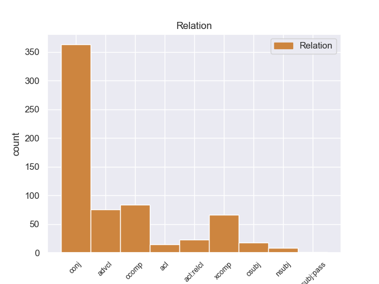
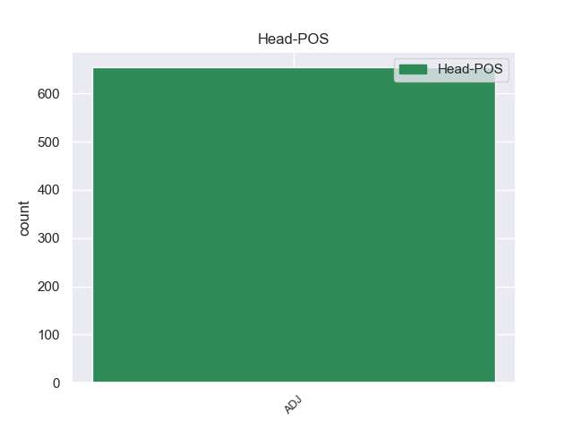
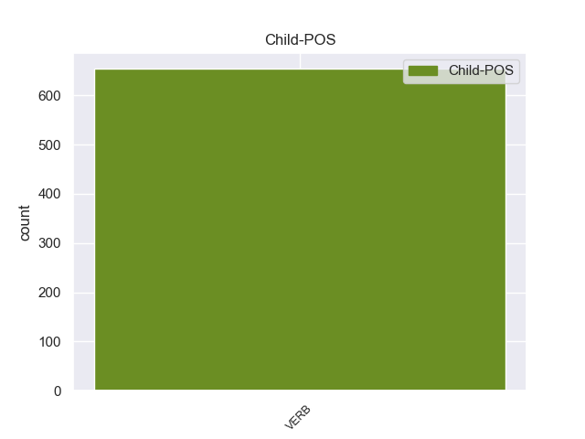

Distribution of features within this leaf



Agreement Rules sorted by frequency.
- When the dependent token is the conjunct(conj) of the head token, and the head token is ADJ and the dependent token is VERB.
1 Радостно _ _ _ _ 0 _ _ _
2 - _ _ _ _ 0 _ _ _
3 тревожное _ _ _ _ 0 _ _ _
4 чувство _ _ _ _ 0 _ _ _
5 владело _ _ _ _ 0 _ _ _
6 мною _ _ _ _ 0 _ _ _
7 : _ _ _ _ 0 _ _ _
8 я _ _ _ _ 0 _ _ _
9 знал _ _ _ _ 0 _ _ _
10 , _ _ _ _ 0 _ _ _
11 что _ _ _ _ 0 _ _ _
12 ушел _ _ _ _ 0 _ _ _
13 не _ _ _ _ 0 _ _ _
14 так _ _ _ _ 0 _ _ _
15 уж _ _ _ _ 0 _ _ _
16 далеко _ _ _ _ 0 _ _ _
17 и _ _ _ _ 0 _ _ _
18 все _ _ _ _ 0 _ _ _
19 же _ _ _ _ 0 _ _ _
20 куда _ _ _ _ 0 _ _ _
21 сильнее _ _ _ _ 0 _ _ _
22 оторвался _ _ _ _ 0 _ _ _
23 от _ _ _ _ 0 _ _ _
24 дома _ _ _ _ 0 _ _ _
25 , _ _ _ _ 0 _ _ _
26 чем _ _ _ _ 0 _ _ _
27 если _ _ _ _ 0 _ _ _
28 бы _ _ _ _ 0 _ _ _
29 забрел _ _ _ _ 0 _ _ _
30 в _ _ _ _ 0 _ _ _
31 последнюю _ _ _ _ 0 _ _ _
32 даль _ _ _ _ 0 _ _ _
33 по _ _ _ _ 0 _ _ _
34 знакомой знакомый ADJ _ Case=Dat|Degree=Pos|Gender=Fem|Number=Sing 0 _ _ _
35 , _ _ _ _ 0 _ _ _
36 проторенной проторить VERB _ Aspect=Perf|Case=Dat|Gender=Fem|Number=Sing|Tense=Past|VerbForm=Part|Voice=Pass 34 conj 34:conj _
37 тропке _ _ _ _ 0 _ _ _
38 . _ _ _ _ 0 _ _ _
1 Вопрос _ _ _ _ 0 _ _ _
2 стоит _ _ _ _ 0 _ _ _
3 так _ _ _ _ 0 _ _ _
4 : _ _ _ _ 0 _ _ _
5 созидательное _ _ _ _ 0 _ _ _
6 сотрудничество _ _ _ _ 0 _ _ _
7 должно должен ADJ _ Degree=Pos|Gender=Neut|Number=Sing|Variant=Short 0 _ _ _
8 быть _ _ _ _ 0 _ _ _
9 налажено наладить VERB _ Aspect=Perf|Gender=Neut|Number=Sing|Tense=Past|Variant=Short|VerbForm=Part|Voice=Pass 7 xcomp 7:xcomp SpaceAfter=No
10 . _ _ _ _ 0 _ _ _
1 Цветы _ _ _ _ 0 _ _ _
2 , _ _ _ _ 0 _ _ _
3 похожие _ _ _ _ 0 _ _ _
4 на _ _ _ _ 0 _ _ _
5 мясистые _ _ _ _ 0 _ _ _
6 петушиные _ _ _ _ 0 _ _ _
7 гребни _ _ _ _ 0 _ _ _
8 , _ _ _ _ 0 _ _ _
9 цветы _ _ _ _ 0 _ _ _
10 , _ _ _ _ 0 _ _ _
11 напоминающие _ _ _ _ 0 _ _ _
12 наш _ _ _ _ 0 _ _ _
13 садовый _ _ _ _ 0 _ _ _
14 " _ _ _ _ 0 _ _ _
15 львиный _ _ _ _ 0 _ _ _
16 зев _ _ _ _ 0 _ _ _
17 " _ _ _ _ 0 _ _ _
18 , _ _ _ _ 0 _ _ _
19 но _ _ _ _ 0 _ _ _
20 не _ _ _ _ 0 _ _ _
21 желтые _ _ _ _ 0 _ _ _
22 с _ _ _ _ 0 _ _ _
23 красноватыми _ _ _ _ 0 _ _ _
24 подпалинами _ _ _ _ 0 _ _ _
25 , _ _ _ _ 0 _ _ _
26 а _ _ _ _ 0 _ _ _
27 многокрасочные _ _ _ _ 0 _ _ _
28 : _ _ _ _ 0 _ _ _
29 с _ _ _ _ 0 _ _ _
30 пунцовым пунцовый ADJ _ Case=Ins|Degree=Pos|Gender=Neut|Number=Sing 0 _ _ _
31 , _ _ _ _ 0 _ _ _
32 словно _ _ _ _ 0 _ _ _
33 окровавленным окровавить VERB _ Aspect=Perf|Case=Ins|Gender=Neut|Number=Sing|Tense=Past|VerbForm=Part|Voice=Pass 30 advcl 30:advcl _
34 верхним _ _ _ _ 0 _ _ _
35 небом _ _ _ _ 0 _ _ _
36 и _ _ _ _ 0 _ _ _
37 синеватым _ _ _ _ 0 _ _ _
38 - _ _ _ _ 0 _ _ _
39 нижним _ _ _ _ 0 _ _ _
40 , _ _ _ _ 0 _ _ _
41 фиолетовым _ _ _ _ 0 _ _ _
42 храпом _ _ _ _ 0 _ _ _
43 , _ _ _ _ 0 _ _ _
44 палевыми _ _ _ _ 0 _ _ _
45 надбровьями _ _ _ _ 0 _ _ _
46 , _ _ _ _ 0 _ _ _
47 янтарной _ _ _ _ 0 _ _ _
48 головой _ _ _ _ 0 _ _ _
49 и _ _ _ _ 0 _ _ _
50 желтыми _ _ _ _ 0 _ _ _
51 заушинами _ _ _ _ 0 _ _ _
52 . _ _ _ _ 0 _ _ _
1 Он _ _ _ _ 0 _ _ _
2 был _ _ _ _ 0 _ _ _
3 счастлив счастливый ADJ _ Degree=Pos|Gender=Masc|Number=Sing|Variant=Short 0 _ _ _
4 , _ _ _ _ 0 _ _ _
5 что _ _ _ _ 0 _ _ _
6 начал начать VERB _ Aspect=Perf|Gender=Masc|Mood=Ind|Number=Sing|Tense=Past|VerbForm=Fin|Voice=Act 3 ccomp 3:ccomp _
7 учиться _ _ _ _ 0 _ _ _
8 . _ _ _ _ 0 _ _ _
1 Я _ _ _ _ 0 _ _ _
2 уже _ _ _ _ 0 _ _ _
3 собирался _ _ _ _ 0 _ _ _
4 отдать _ _ _ _ 0 _ _ _
5 команду _ _ _ _ 0 _ _ _
6 , _ _ _ _ 0 _ _ _
7 но _ _ _ _ 0 _ _ _
8 в _ _ _ _ 0 _ _ _
9 кухне _ _ _ _ 0 _ _ _
10 тренькнул _ _ _ _ 0 _ _ _
11 звонок _ _ _ _ 0 _ _ _
12 , _ _ _ _ 0 _ _ _
13 хлопнула _ _ _ _ 0 _ _ _
14 дверь _ _ _ _ 0 _ _ _
15 , _ _ _ _ 0 _ _ _
16 и _ _ _ _ 0 _ _ _
17 мимо _ _ _ _ 0 _ _ _
18 борта _ _ _ _ 0 _ _ _
19 моего _ _ _ _ 0 _ _ _
20 корабля _ _ _ _ 0 _ _ _
21 , _ _ _ _ 0 _ _ _
22 размахивая _ _ _ _ 0 _ _ _
23 толстым _ _ _ _ 0 _ _ _
24 , _ _ _ _ 0 _ _ _
25 таинственно _ _ _ _ 0 _ _ _
26 и _ _ _ _ 0 _ _ _
27 туго _ _ _ _ 0 _ _ _
28 набитым _ _ _ _ 0 _ _ _
29 портфелем _ _ _ _ 0 _ _ _
30 , _ _ _ _ 0 _ _ _
31 быстро _ _ _ _ 0 _ _ _
32 прошел _ _ _ _ 0 _ _ _
33 отец _ _ _ _ 0 _ _ _
34 : _ _ _ _ 0 _ _ _
35 легкий _ _ _ _ 0 _ _ _
36 , _ _ _ _ 0 _ _ _
37 бодрый _ _ _ _ 0 _ _ _
38 , _ _ _ _ 0 _ _ _
39 со _ _ _ _ 0 _ _ _
40 смугловатым смугловатый ADJ _ Case=Ins|Degree=Pos|Gender=Masc|Number=Sing 0 _ _ _
41 , _ _ _ _ 0 _ _ _
42 будто _ _ _ _ 0 _ _ _
43 обдутым обдунуть VERB _ Aspect=Perf|Case=Ins|Gender=Masc|Number=Sing|Tense=Past|VerbForm=Part|Voice=Pass 40 acl 40:acl _
44 южным _ _ _ _ 0 _ _ _
45 ветром _ _ _ _ 0 _ _ _
46 лицом _ _ _ _ 0 _ _ _
47 . _ _ _ _ 0 _ _ _
1 Тот _ _ _ _ 0 _ _ _
2 черненький черненький ADJ _ Case=Nom|Degree=Pos|Gender=Masc|Number=Sing 0 _ _ _
3 , _ _ _ _ 0 _ _ _
4 интеллигентненький _ _ _ _ 0 _ _ _
5 , _ _ _ _ 0 _ _ _
6 что _ _ _ _ 0 _ _ _
7 примечал примечать VERB _ Aspect=Imp|Gender=Masc|Mood=Ind|Number=Sing|Tense=Past|VerbForm=Fin|Voice=Act 2 acl:relcl 2:acl:relcl _
8 его _ _ _ _ 0 _ _ _
9 при _ _ _ _ 0 _ _ _
10 регистрации _ _ _ _ 0 _ _ _
11 как _ _ _ _ 0 _ _ _
12 своего _ _ _ _ 0 _ _ _
13 , _ _ _ _ 0 _ _ _
14 прямо _ _ _ _ 0 _ _ _
15 направился _ _ _ _ 0 _ _ _
16 теперь _ _ _ _ 0 _ _ _
17 к _ _ _ _ 0 _ _ _
18 Монахову _ _ _ _ 0 _ _ _
19 как _ _ _ _ 0 _ _ _
20 к _ _ _ _ 0 _ _ _
21 своему _ _ _ _ 0 _ _ _
22 . _ _ _ _ 0 _ _ _
1 Реально реальный ADJ _ Degree=Pos|Gender=Neut|Number=Sing|Variant=Short 0 _ _ _
2 ли _ _ _ _ 0 _ _ _
3 предложенное предложить VERB _ Aspect=Perf|Case=Nom|Gender=Neut|Number=Sing|Tense=Past|VerbForm=Part|Voice=Pass 1 nsubj 1:nsubj _
4 нами _ _ _ _ 0 _ _ _
5 ? _ _ _ _ 0 _ _ _
1 Пока _ _ _ _ 0 _ _ _
2 не _ _ _ _ 0 _ _ _
3 ясно ясный ADJ _ Degree=Pos|Gender=Neut|Number=Sing|Variant=Short 0 _ _ _
4 , _ _ _ _ 0 _ _ _
5 когда _ _ _ _ 0 _ _ _
6 было _ _ _ _ 0 _ _ _
7 записано записать VERB _ Aspect=Perf|Gender=Neut|Number=Sing|Tense=Past|Variant=Short|VerbForm=Part|Voice=Pass 3 csubj 3:csubj _
8 это _ _ _ _ 0 _ _ _
9 обращение _ _ _ _ 0 _ _ _
10 , _ _ _ _ 0 _ _ _
11 которое _ _ _ _ 0 _ _ _
12 прозвучало _ _ _ _ 0 _ _ _
13 в _ _ _ _ 0 _ _ _
14 эфире _ _ _ _ 0 _ _ _
15 на _ _ _ _ 0 _ _ _
16 фоне _ _ _ _ 0 _ _ _
17 фотографии _ _ _ _ 0 _ _ _
18 террориста _ _ _ _ 0 _ _ _
19 № _ _ _ _ 0 _ _ _
20 1 _ _ _ _ 0 _ _ _
21 , _ _ _ _ 0 _ _ _
22 передает _ _ _ _ 0 _ _ _
23 AP _ _ _ _ 0 _ _ _
24 . _ _ _ _ 0 _ _ _
Disagree Examples:
1 Конечно _ _ _ _ 0 _ _ _
2 , _ _ _ _ 0 _ _ _
3 Савельеву _ _ _ _ 0 _ _ _
4 легко легкий ADJ _ Degree=Pos|Gender=Neut|Number=Sing|Variant=Short 0 _ _ _
5 было _ _ _ _ 0 _ _ _
6 рассуждать _ _ _ _ 0 _ _ _
7 , _ _ _ _ 0 _ _ _
8 поскольку _ _ _ _ 0 _ _ _
9 Ефимова _ _ _ _ 0 _ _ _
10 прибыла прибыть VERB _ Aspect=Perf|Gender=Fem|Mood=Ind|Number=Sing|Tense=Past|VerbForm=Fin|Voice=Act 4 advcl 4:advcl _
11 к _ _ _ _ 0 _ _ _
12 нему _ _ _ _ 0 _ _ _
13 с _ _ _ _ 0 _ _ _
14 направлением _ _ _ _ 0 _ _ _
15 главка _ _ _ _ 0 _ _ _
16 . _ _ _ _ 0 _ _ _
1 Но _ _ _ _ 0 _ _ _
2 ей _ _ _ _ 0 _ _ _
3 трудно трудный ADJ _ Degree=Pos|Gender=Neut|Number=Sing|Variant=Short 0 _ _ _
4 , _ _ _ _ 0 _ _ _
5 и _ _ _ _ 0 _ _ _
6 я _ _ _ _ 0 _ _ _
7 поехала поехать VERB _ Aspect=Perf|Gender=Fem|Mood=Ind|Number=Sing|Tense=Past|VerbForm=Fin|Voice=Act 3 conj 3:conj _
8 вместо _ _ _ _ 0 _ _ _
9 нее _ _ _ _ 0 _ _ _
10 . _ _ _ _ 0 _ _ _
1 С _ _ _ _ 0 _ _ _
2 того _ _ _ _ 0 _ _ _
3 времени _ _ _ _ 0 _ _ _
4 , _ _ _ _ 0 _ _ _
5 как _ _ _ _ 0 _ _ _
6 Ушаков _ _ _ _ 0 _ _ _
7 услышал _ _ _ _ 0 _ _ _
8 стрельбу _ _ _ _ 0 _ _ _
9 , _ _ _ _ 0 _ _ _
10 он _ _ _ _ 0 _ _ _
11 понял _ _ _ _ 0 _ _ _
12 , _ _ _ _ 0 _ _ _
13 что _ _ _ _ 0 _ _ _
14 самое _ _ _ _ 0 _ _ _
15 страшное страшный ADJ _ Case=Nom|Degree=Pos|Gender=Neut|Number=Sing 0 _ _ _
16 , _ _ _ _ 0 _ _ _
17 чего _ _ _ _ 0 _ _ _
18 он _ _ _ _ 0 _ _ _
19 боялся бояться VERB _ Aspect=Imp|Gender=Masc|Mood=Ind|Number=Sing|Tense=Past|VerbForm=Fin|Voice=Mid 15 acl:relcl 15:acl:relcl SpaceAfter=No
20 , _ _ _ _ 0 _ _ _
21 случилось _ _ _ _ 0 _ _ _
22 : _ _ _ _ 0 _ _ _
23 танки _ _ _ _ 0 _ _ _
24 настигли _ _ _ _ 0 _ _ _
25 дивизион _ _ _ _ 0 _ _ _
26 . _ _ _ _ 0 _ _ _
1 Ушаков _ _ _ _ 0 _ _ _
2 не _ _ _ _ 0 _ _ _
3 был _ _ _ _ 0 _ _ _
4 суеверен суеверный ADJ _ Degree=Pos|Gender=Masc|Number=Sing|Variant=Short 0 _ _ _
5 , _ _ _ _ 0 _ _ _
6 но _ _ _ _ 0 _ _ _
7 , _ _ _ _ 0 _ _ _
8 когда _ _ _ _ 0 _ _ _
9 он _ _ _ _ 0 _ _ _
10 увидел _ _ _ _ 0 _ _ _
11 подбитый _ _ _ _ 0 _ _ _
12 бронетранспортер _ _ _ _ 0 _ _ _
13 , _ _ _ _ 0 _ _ _
14 место _ _ _ _ 0 _ _ _
15 это _ _ _ _ 0 _ _ _
16 показалось казаться VERB _ Aspect=Perf|Gender=Neut|Mood=Ind|Number=Sing|Tense=Past|VerbForm=Fin|Voice=Mid 4 conj 4:conj _
17 ему _ _ _ _ 0 _ _ _
18 дурным _ _ _ _ 0 _ _ _
19 . _ _ _ _ 0 _ _ _
1 Это _ _ _ _ 0 _ _ _
2 было _ _ _ _ 0 _ _ _
3 последнее последний ADJ _ Case=Nom|Degree=Pos|Gender=Neut|Number=Sing 0 _ _ _
4 , _ _ _ _ 0 _ _ _
5 что _ _ _ _ 0 _ _ _
6 видел видеть VERB _ Aspect=Imp|Gender=Masc|Mood=Ind|Number=Sing|Tense=Past|VerbForm=Fin|Voice=Act 3 acl:relcl 3:acl:relcl _
7 Ушаков _ _ _ _ 0 _ _ _
8 , _ _ _ _ 0 _ _ _
9 и _ _ _ _ 0 _ _ _
10 умер _ _ _ _ 0 _ _ _
11 он _ _ _ _ 0 _ _ _
12 счастливый _ _ _ _ 0 _ _ _
13 . _ _ _ _ 0 _ _ _